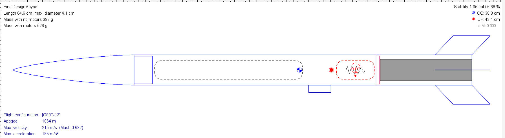

Co-engineered with a team of five to design, fabricate, simulate, and launch a G-Class model rocket. This introductory aerospace engineering project provided hands-on experience with CAD, aerodynamic stability, flight simulation, 3D printing, fabrication, and rocket assembly.
The final rocket measured approximately 64.6 cm in length, 4.1 cm in diameter, and weighed 526 grams.
The rocket was developed through an iterative design process involving CAD modeling, flight simulation, fabrication, and physical assembly.